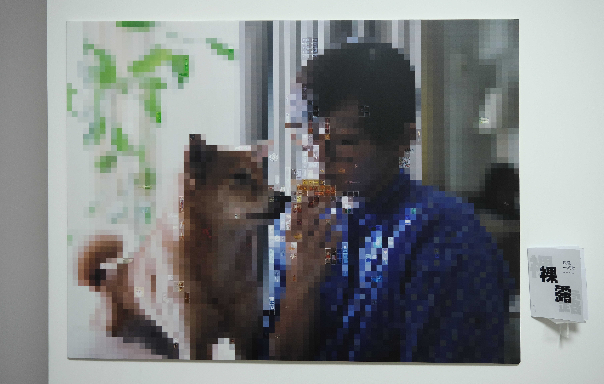
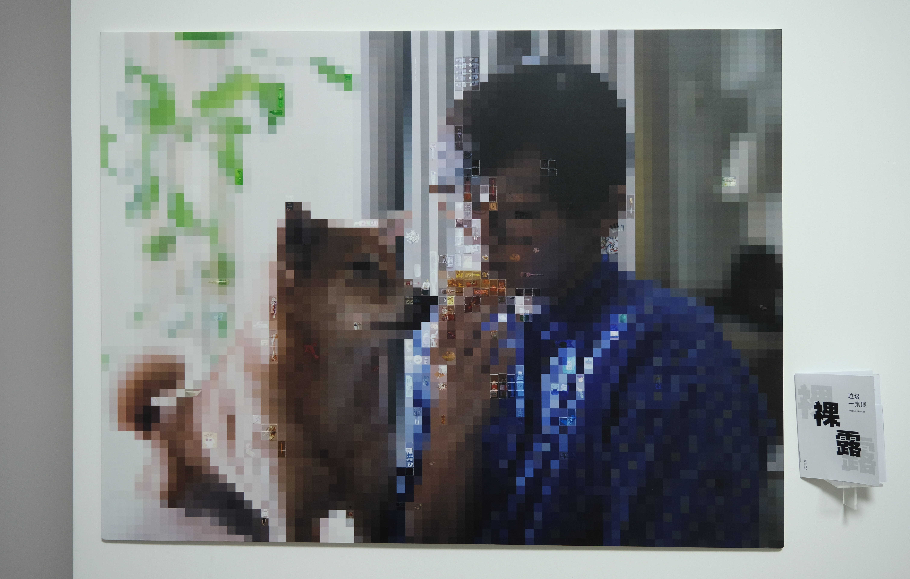
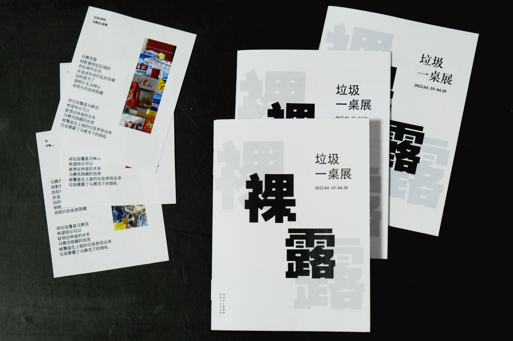
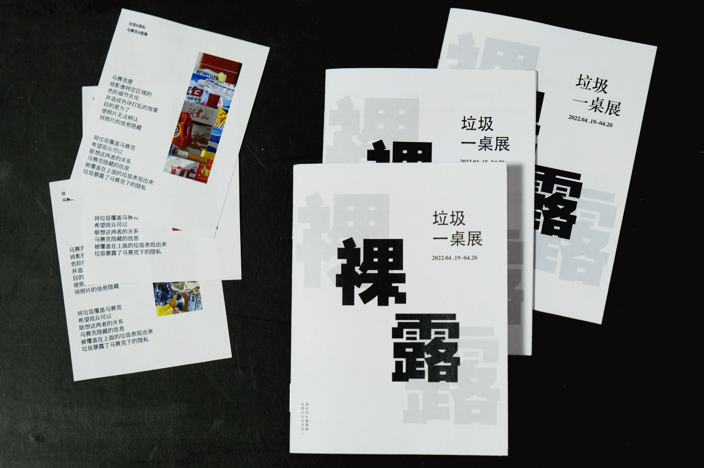
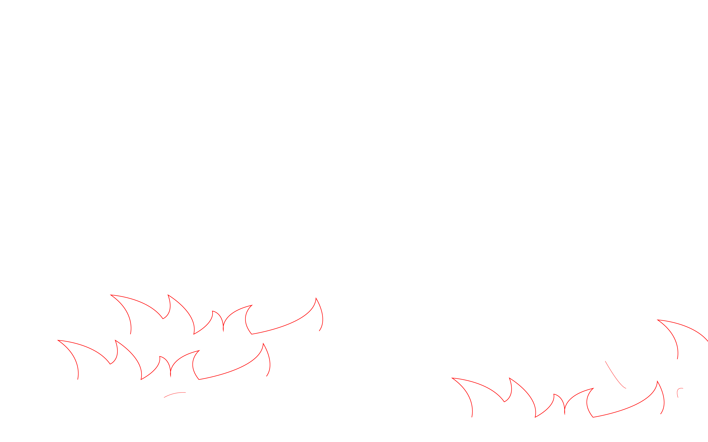
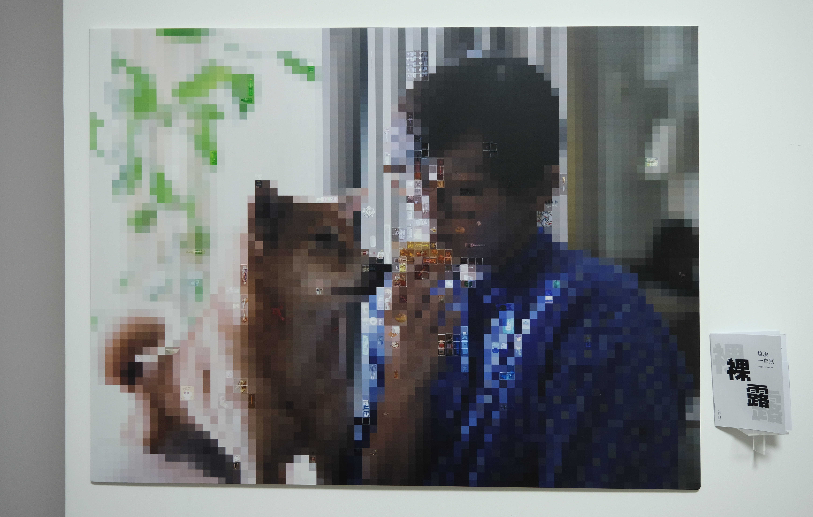
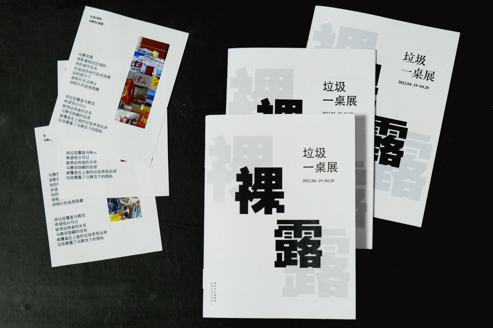

 

Welcome to Saki Ji's personal website, where you can see a selection of Saki ji's works & personal introduction. Please enjoy browsing this site.



In today's world of information, shredders, security stamps, thermal paper correction solutions and a host of other tools have been invented to protect your privacy, all of which say "your trash contains your privacy". You are staring at the rubbish and the rubbish is staring at you. So what kind of attitude should we take towards our rubbish? To the secrets that used to be yours? We chose a mosaic as a vehicle to convey privacy. The mosaic is used to obscure private information and areas of privacy by manipulating the image to create a colour-blocking effect, with the aim of making it unrecognisable to the viewer. By covering the mosaic with the collected trash of the main character, the image behind the mosaic is exposed to all viewers. The viewer can discover the privacy behind the mosaic through the rubbish. The viewer is inspired to rethink and reapproach the privacy in the rubbish.